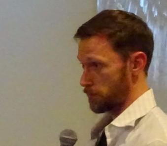

Blixa Morgan
blixa morgan is mrmakeit, a hardware tinkerer and web developer working primarily in node.js. he's a constant contributor to the burgeoning tulsa technology scene at startup weekends, maker faires, tulsa web devs, and his local fab lab. solving a mozilla developer's repo problems led to creating webhooks service minyhooks and further contributions to mdn tools. solving problems is what brought him to the thing system, helping his 97 year old grandfather live better. his endless curiosity and enthusiasm to learn how everything works, to play with tech, and make things better makes blixa a "swiss army dev" in uniting digital and physical worlds.
brendan t. hill
brendan's early experiences leading a foss game project led him to earn a business administration degree from the walton college at university of arkansas. he then worked in stockholm and new york as a product manager of erp and crm software, and later in electronics marketing for google. he readily takes the role of a project promoter and a bridge, uniting developers with other useful folks, even if they don't have coding skills. he shares the belief that things you own shouldn't own you, that you should be free to change and make them truly yours. that's especially true of the things that make a house your home. brendan bicycles daily and is conspicuously absent from social media.
the co-founders and current curators emeritus of the things system are dr. alasdair allan and marshall t. rose ph.d. they continue to be involved as advisors to the current curators and members of the thing community.
 alasdair has written and experimented extensively in mobile computing and distributed sensor networks, authoring 7 books and is a contributing editor at make magazine. he holds a ph.d. in astrophysics and his work in distributed peer-to-peer networking for telescopes aided the discovery of the most distant object yet found in the universe.
alasdair has written and experimented extensively in mobile computing and distributed sensor networks, authoring 7 books and is a contributing editor at make magazine. he holds a ph.d. in astrophysics and his work in distributed peer-to-peer networking for telescopes aided the discovery of the most distant object yet found in the universe.
 marshall is a network protocol and software engineer as well as an author and speaker. his work includes contributing 69 rfcs to the ietf. protocols he has contributed to include snmp, esmtp, beep, the phone company (tpc.int), and the xmpp. he holds a ph.d. in information and computer science from the university of california, irvine and is former area director for network management of the ietf.
marshall is a network protocol and software engineer as well as an author and speaker. his work includes contributing 69 rfcs to the ietf. protocols he has contributed to include snmp, esmtp, beep, the phone company (tpc.int), and the xmpp. he holds a ph.d. in information and computer science from the university of california, irvine and is former area director for network management of the ietf.
 we're pleased to work with danny goodman — author of 47 books and world-famous javascript and html expert —
and with point.b studio, home of world-class fine art + design.
we're pleased to work with danny goodman — author of 47 books and world-famous javascript and html expert —
and with point.b studio, home of world-class fine art + design.